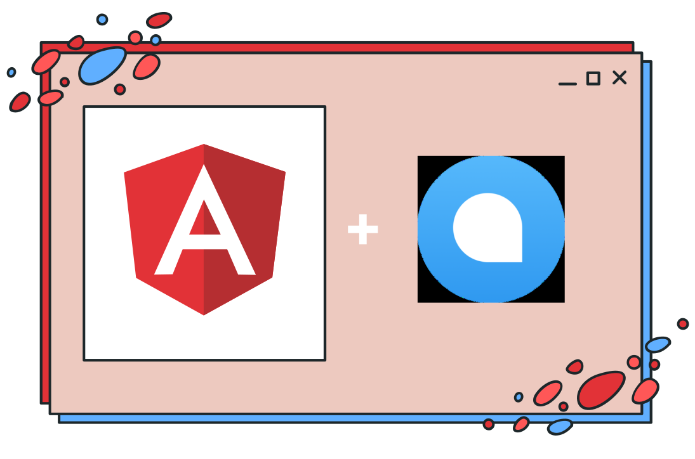

<div class="text-indigo-400 m-6 bg-cover bg-fixed">
  <div class="h-full">
    <div class="w-full container mx-auto">
      <div class="w-full flex items-center justify-between">
        <a
          class="flex items-center text-blue-500-500 no-underline hover:no-underline font-bold text-2xl lg:text-4xl"
          href="#"
        >
          <span
            class="bg-clip-text text-5xl text-transparent text-red-500 pr-2"
          >
            Angular</span
          >
          <span class="bg-clip-text text-transparent text-white pr-2">& </span>
          <span
            class="bg-clip-text text-5xl text-transparent text-blue-500 pr-2"
          >
            Chatwoot</span
          >
          <span class="bg-clip-text text-transparent text-white pl-2">
            Integration</span
          >
        </a>
      </div>
    </div>

    <!--Main-->
    <div
      class="container pt-24 md:pt-30 mx-auto flex flex-wrap flex-col md:flex-row items-center"
    >
      <!--Left Col-->
      <div
        class="flex flex-col w-full xl:w-2/5 justify-center lg:items-start overflow-y-hidden"
      >
        <h1
          class="my-4 text-3xl md:text-3xl text-white font-bold leading-tight text-center md:text-left"
        >
          <span class="text-transparent text-red-500">Angular</span> +
          <span class="text-transparent text-blue-500"> Chatwoot </span>
        </h1>
        <p
          class="text-base md:text-2xl mb-8 md:text-left text-white my-4 text-justify"
        >
          <span
            >It's for people who are serious about learning
            <span class="text-transparent text-red-500">Angular</span> and
            integrating
            <span class="text-transparent text-blue-500">chatwoot</span> from
            the ground up and want to focus on the basics. We'll create a full
            landing page with
            <span class="text-transparent text-red-500">Angular</span> and
            <span class="text-transparent text-blue-500">chatwoot</span> that
            allows users to fully utilize the
            <span class="text-transparent text-blue-500">chatwoot</span>
            features. This blog session will cover the basics of
            <span class="text-transparent text-red-500">Angular</span> as well
            as how to incorporate
            <span class="text-transparent text-blue-500">chatwoot</span> into a
            <span class="text-transparent text-red-500">Angular</span>
            application.</span
          >
        </p>

        <div class="w-full xl:w-3/5 p-2 overflow-hidden">
          
        </div>
      </div>
      <!--Right Col-->
      <div class="w-full xl:w-3/5 p-2 overflow-hidden">
        
      </div>
    </div>
  </div>
</div>
